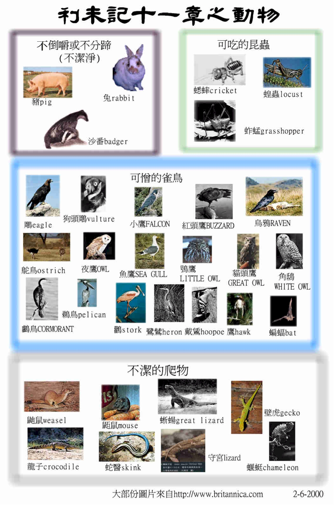

|
與神同住的人生──要聖潔(分別為聖歸於神) |
||||
|
人的奉獻--要蒙神悅納 |
人的生活--要分別出來 |
人的事奉--要尊神為聖 |
人的日子--要記念真神 |
人的產業--要歸神為聖 |
|
１－１０ |
１１－２０ |
２１－２２ |
２３－２４ |
２５－２７ |
二.人的生活──要分別出來（11-20）
〜內容『這是走獸、飛鳥，和水中游動的活物，並地上爬物的條例。要把潔淨的和不潔淨的，可吃的與不可吃的活物，都分別出來。』利11:46-47
『這就是大痲瘋災病的條例，無論是在羊毛衣服上，麻布衣服上，經上、緯上，和皮子做的什麼物件上，可以定為潔淨或是不潔淨。』利13:59
『這是為各類大痲瘋的災病和頭疥，並衣服與房子的大痲瘋，以及癤子、癬、火斑所立的條例。』利14:54-56
『這是患漏症和夢遺而不潔淨的。』利15:32
『你們從前住的埃及地，那裡人的行為，你們不可效法，我要領你們到的迦南地，那裡人的行為也不可效法，也不可照他們的惡俗行。你們要遵我的典章，守我的律例，按此而行。我是耶和華你們的神。所以，你們要守我的律例典章；人若遵行，就必因此活著。我是耶和華。』利18:3-5
＊與神同住的選民，在生活中必須遵守的條例，有那些是『不可』有那些是『不潔』有那些是『不可效法』有那些是『要分別出來』的事項。
〜特點：很多『不可』『不潔』『潔淨』『分別出來』字眼
〜結構：關乎飲食（11）→關乎身子（12-15）→關乎贖罪（16）→關乎行為（18-20）
1.
在飲食上要分別出來（11）
結構：關乎食物：地上的走獸（v.2-8）→水�堛滌坁哄]v.9-12）→空中的活物（v.13-19）→昆蟲（v.20-23）→地上的爬物類（v.29-30，41-43）
關乎摸死之物：死了的不潔之動物（v.24-38）→血死之潔淨之動物（v.39-40）
A.分別出來的原因
『我是耶和華你們的神；所以你們要成為聖潔，因為我是聖潔的。你們也不可在地上的爬物污穢自己。我是把你們從埃及地領出來的耶和華，要作你們的神；所以你們要聖潔，因為我是聖潔的。』利11:44-45
a.神的屬性
〜因神是聖潔，祂的要求比人更高，人當在生活中分別出，才能與聖潔的神同住
b.人的標準
〜不可效法外邦，卻要成為聖潔的子民
c.得活之法
『你們要這樣使以色列人與他們的污穢隔絕，免得他們玷污我的帳幕，就因自己的污穢死亡。』15:31
『所以，你們要守我的律例典章；人若遵行，就必因此活著。我是耶和華。』18:5
『無論什麼人，行了其中可憎的一件事，必從民中剪除。』18:29
『因為耶和華你的神常在你營中行走，要救護你，將仇敵交給你，所以你的營理當聖潔，免得他見你那裡有污穢，就離開你。』申23:14
〜人若要與神同住，必須聖潔，神是會中營中行走，人若不潔，神不單會離開人，神更可擊殺人
d.其它
e.g.為了衛生和健康的理由，不潔的可能傳染疾病。
B.分別出來的食物
a.地上的走獸
(1)可吃的--蹄分兩瓣而又倒嚼（反芻）的走獸
「你們曉諭以色列人說，在地上一切走獸中可吃的乃是這些：凡蹄分兩瓣、倒嚼的走獸，你們都可以吃。」11:2-3
「可吃的牲畜就是牛、綿羊、山羊、鹿、羚羊、麍子、野山羊、麋鹿、黃羊、青羊。」申14:4-5
〜例如牛、羊、鹿
(2)不可吃的──不倒嚼（不反芻）或不分蹄的走獸
「但那倒嚼或分蹄之中不可吃的乃是：駱駝因為倒嚼不分蹄，就與你們不潔淨；沙番因為倒嚼不分蹄，就與你們不潔淨；兔子因為倒嚼不分蹄，就與你們不潔淨；豬因為蹄分兩瓣，卻不倒嚼，就與你們不潔淨。」利11:4-7
〜e.g.駱駝、沙番（石-利亞-種哺乳類動物）、免子、豬。
〜駱駝雖反芻，但在沙漠行走，蹄雖分蹄，但底下有肉墊相連，不完全分開，不可吃
〜沙番或作山鼠，是兔類的動物，常住在磐石的孔穴中
b.水�堛滌坁�
(1)可吃的──有翅有鱗的
「水中可吃的乃是這些：凡在水裡、海裡、河裡、有翅有鱗的，都可以吃。」11:9
(2)不可吃的──無翅無鱗的
「凡在海裡、河裡，並一切水裡游動的活物，無翅無鱗的，你們都當以為可憎。」11:10
〜通常活在淺水中，吃腐敗的食物維生，易傳染疾病，例如鰻、鱔
c.空中的飛鳥──可憎的雀飛鳥
「雀鳥中你們當以為可憎、不可吃的乃是：鵰、狗頭鵰、紅頭鵰、鷂鷹、小鷹與其類；烏鴉與其類；鴕鳥、夜鷹、魚鷹、鷹與其類；鴞鳥、鸕鶿、貓頭鷹、角鴟、鵜鶘、禿鵰、鸛、鷺鷥與其類；戴鵀與蝙蝠。」11:13-19
〜e.g.鵰、鷹、烏鴉、貓頭鷹、蝙蝠．．．．
＊大多為兇禽或以腐爛食物為生的飛禽
d.昆蟲
(1)可吃的──有足有腿及在地上蹦跳
「只是有翅膀用四足爬行的物中，有足有腿，在地上蹦跳的，你們還可以吃。其中有蝗蟲、螞蚱、蟋蟀與其類；蚱蜢與其類；這些你們都可以吃。」11:21-22
〜例如蝗蟲、螞蚱、蟋蟀
(2)不可吃的──有翅膀用腿四足爬行的
「凡有翅膀用四足爬行的物，你們都當以為可憎。」11:20
〜昆蟲通常有六足，用四足形容可能是否人用四足動
物形容昆蟲
〜這類昆蟲多以腐敗，污穢食物為生，吃了易生病。但蝗蟲卻含豐富蛋白質與脂肪
e.地上可憎的爬物
「地上爬物與你們不潔淨的乃是這些：鼬鼠、鼫鼠、蜥蜴與其類；」11:29
「凡地上的爬物是可憎的，都不可吃。凡用肚子行走的和用四足行走的，或是有許多足的，就是一切爬在地上的，你們都不可吃，因為是可憎的。」11:41-42
e.g.蜥蜴、鼬鼠、壁虎、蛇醫．．．．
＊摸了牠們的屍體也不潔淨
f.死了的動物昆蟲
「這些都能使你們不潔淨。凡摸了死的，必不潔淨到晚上。」11:24
「若是死的，有一點掉在要種的子粒上，子粒仍是潔淨；若水已經澆在子粒上，那死的有一點掉在上頭，這子粒就與你們不潔淨。」11:37-38
「你們可吃的走獸若是死了，有人摸他，必不潔淨到晚上；有人吃那死了的走獸，必不潔淨到晚上，並要洗衣服；拿了死走獸的，必不潔淨到晚上，並要洗衣服。」11:39-40
〜無論是潔淨與不潔之物，死了也是不潔的，而死了的物掉在已有生機的種子上（已澆上死），種子也不潔淨
C.對不潔之物的處理
a.不可吃
『凡地上的爬物是可憎的，都不可吃。』11:41
b.不可摸
『這些爬物都是與你們不潔淨的。在他死了以後，凡摸了的，必不潔淨到晚上。』11:31
c.視可憎
『凡有翅膀用四足爬行的物，你們都當以為可憎。』11:20
d.要打破
『若有死了掉在瓦器裡的，其中不拘有什麼，就不潔淨，你們要把這瓦器打破了。』11:33
e.要自潔
『有人吃那死了的走獸，必不潔淨到晚上，並要洗衣服；拿了死走獸的，必不潔淨到晚上，並要洗衣服。』11:40

2.在身子上要潔淨除污
A.生育後的處理（12）
a.不潔淨的原因
（1）血源的問題
『耶和華對摩西說「你曉諭以色列人說若有婦人懷孕生男孩，他就不潔淨七天，像在月經污穢的日子不潔淨一樣。』12:1-2
『患漏症人所騎的鞍子也為不潔淨。』15:9
『他若生女孩，就不潔淨兩個七天，像污穢的時候一樣，要在產血不潔之中，家居六十六天。』12:5
『祭司要獻在耶和華面前，為他贖罪，他的血源就潔淨了。這條例是為生育的婦人，無論是生男生女。』12:7
〜可能生兒女會像月經污穢有血源不潔的情況
（2）原罪的問題
『我是在罪孽裡生的，在我母親懷胎的時候就有了罪。』詩51:5
b.男女不同的對待
(1)生男的
「你曉諭以色列人說：若有婦人懷孕生男孩，他就不潔淨七天，像在月經污穢的日子不潔淨一樣。第八天，要給嬰孩行割禮。」12:2-3
∼不潔淨七天
∼另在家居33天
(2)生女的
「他若生女孩，就不潔淨兩個七天，像污穢的時候一樣，要在產血不潔之中，家居六十六天。」12:5
∼不潔淨14天
∼另在家居66天
〜為甚麼生男與生女有不同的對待？可能要人記念罪是藉女人入了世界的
c.得潔淨的方法
「滿了潔淨的日子，無論是為男孩是為女孩，他要把一歲的羊羔為燔祭，一隻雛鴿或是一隻斑鳩為贖罪祭，帶到會幕門口交給祭司。」12:6
（1）等候
（2）燔祭
（3）贖罪祭
B.大痳瘋的處理（13-14）
『這是為各類大痲瘋的災病和頭疥，並衣服與房子的大痲瘋，以及癤子、癬、火斑所立的條例。指明何時為潔淨，何時為不潔淨。這是大痲瘋的條例。』
14:54-57
〜『大痳瘋』可能指不同種類嚴重的皮膚病
〜而祭司負表分辨及察看角式
a.仔細分辨
(1)毛是否變白色而陷入皮膚以下？
「祭司要察看肉皮上的災病，若災病處的毛已經變白，災病的現象深於肉上的皮，這便是大痲瘋的災病。祭司要察看他，定他為不潔淨。」13:3
「祭司要察看，若現象窪於皮，其上的毛也變白了，就要定他為不潔淨，是大痲瘋的災病發在瘡中。」13:20
「祭司就要察看，火斑中的毛若變白了，現象又深於皮，是大痲瘋在火毒中發出，就要定他為不潔淨，是大痲瘋的災病。」13:25
〜以色列人身上的毛和頭髪，多是黑色，病處的毛或變白，可能是大痲瘋
〜包括長癬、火毒、火斑等皮膚病，若仍出現毛變白而陷入皮膚，也是不潔淨的大痲瘋病
(2)毛是否變白而長出紅肉？
「人有了大痲瘋的災病，就要將他帶到祭司面前。祭司要察看，皮上若長了白癤，使毛變白，在長白癤之處有了紅瘀肉，這是肉皮上的舊大痲瘋，祭司要定他為不潔淨，不用將他關鎖，因為他是不潔淨了。」13:9-11
〜毛變白，又有紅瘀肉，可能是舊大痲瘋病復發了
(3)在頭上與鬍鬚上是否長出細黃色及患處是否陷入皮膚？
「無論男女，若在頭上有災病，或是男人鬍鬚上有災病，」13:29
「第七天，祭司要察看災病，若頭疥沒有發散，其間也沒有黃毛，頭疥的現象不深於皮，」13:32
b.耐心觀察
『若火斑在他肉皮上是白的，現象不深於皮，其上的毛也沒有變白，祭司就要將有災病的人關鎖七天。第七天，祭司要察看他，若看災病止住了，沒有在皮上發散，祭司還要將他關鎖七天。第七天，祭司要再察看他，若災病發暗，而且沒有在皮上發散，祭司要定他為潔淨，原來是癬；那人就要洗衣服，得為潔淨。』利13:4-6
〜不要輕率判斷，若患處是有白，不深於皮，仍要先關鎖病者7天，7天後再觀察是否有發散才可定那人是否不潔淨
c.分別出來
『身上有長大痲瘋災病的，他的衣服要撕裂，也要蓬頭散髮，蒙著上唇，喊叫說不潔淨了！不潔淨了！災病在他身上的日子，他便是不潔淨；他既是不潔淨，就要獨居營外。』利13:45-46
〜撒裂衣服、蓬頭散髪及蒙著上唇是弔喪標記，要讓人看到此病如同死人一樣不潔，也藉喊叫，讓人知道此人已分別出來，不可親近
d.提防散發
『祭司要察看，若災病在衣服上，經上、緯上，或是皮子做的什麼物件上，沒有發散，祭司就要吩咐他們，把染了災病的物件洗了，再關鎖七天。洗過以後，祭司要察看，那物件若沒有變色，災病也沒有消散，那物件就不潔淨，是透重的災病，無論正面反面，都要在火中焚燒。』13:53-55
『第七天，祭司要再去察看，災病若在房子的牆上發散，就要吩咐人把那有災病的石頭挖出來，扔在城外不潔淨之處；也要叫人刮房內的四圍，所刮掉的灰泥要倒在城外不潔淨之處；又要用別的石頭代替那挖出來的石頭，要另用灰泥墁房子。』14:39-42
〜要留意病者用過的衣物及住在的房屋，有否傳染了病，要清理
e.得潔轉機
(1)證實痊癒
『長大痲瘋得潔淨的日子，其例乃是這樣要帶他去見祭司。』14:2
(2)獨有方法用2隻活鳥、香柏木、朱紅綫、牛膝草
「就要吩咐人為那求潔淨的拿兩隻潔淨的活鳥和香柏木、朱紅色線，並牛膝草來。祭司要吩咐用瓦器盛活水，把一隻鳥宰在上面。至於那隻活鳥，祭司要把他和香柏木、朱紅色線並牛膝草一同蘸於宰在活水上的鳥血中，用以在那長大痲瘋求潔淨的人身上灑七次，就定他為潔淨，又把活鳥放在田野裡。」14:4-7
(A)一隻活鳥--用瓦器盛活水（常流的水）把1隻鳥宰在上面，使鳥的血流在活水中
(B)另一隻活鳥--香柏木、朱紅線並牛膝草一同蘸在活水上的鳥中，灑在大痲瘋得潔淨的人上七次，也把活鳥放在田野
(3)自潔除污
『求潔淨的人當洗衣服，剃去毛髮，用水洗澡，就潔淨了；然後可以進營，只是要在自己的帳棚外居住七天。第七天，再把頭上所有的頭髮與鬍鬚、眉毛，並全身的毛，都剃了；又要洗衣服，用水洗身，就潔淨了。』14:8-9
(A)第一日：洗衣服，剃毛髪，用水洗淨，在自己棚外住7天
(B)第七日：全身的毛再剃一次，洗衣服
(4)潔淨之禮
〜第八日，要行潔淨之禮
「祭司要取一隻公羊羔獻為贖愆祭，和那一羅革油一同作搖祭，在耶和華面前搖一搖；把公羊羔宰於聖地，就是宰贖罪祭牲和燔祭牲之地。贖愆祭要歸祭司，與贖罪祭一樣，是至聖的。祭司要取些贖愆祭牲的血，抹在求潔淨人的右耳垂上和右手的大拇指上，並右腳的大拇指上。
」14:12-14
(A)贖愆祭：1隻公羊羔
〜公羊羔被宰，羊的血抺在求潔淨的人右耳垂上、右手大拇指、右腳大拇指，而剩餘的祭牲歸祭司
(B)油為他贖罪
「祭司要從那一羅革油中取些倒在自己的左手掌裡，把右手的一個指頭蘸在左手的油裡，在耶和華面前用指頭彈七次。將手裡所剩的油抹在那求潔淨人的右耳垂上和右手的大拇指上，並右腳的大拇指上，就是抹在贖愆祭牲的血上。祭司手裡所剩的油要抹在那求潔淨人的頭上，在耶和華面前為他贖罪。」14:15-18
〜一罪革（約重
(C)贖罪祭1隻母羊羔
「祭司要獻贖罪祭，為那本不潔淨、求潔淨的人贖罪；然後要宰燔祭牲，」14:19
(D)燔祭為他贖罪
「把燔祭和素祭獻在壇上，為他贖罪，他就潔淨了。」14:20
(E)素祭為他贖罪
「把燔祭和素祭獻在壇上，為他贖罪，他就潔淨了。」14:20
(F)若能力不夠
「他若貧窮不能預備夠數，就要取一隻公羊羔作贖愆祭，可以搖一搖，為他贖罪；也要把調油的細麵伊法十分之一為素祭，和油一羅革一同取來；又照他的力量取兩隻斑鳩或是兩隻雛鴿，一隻作贖罪祭，一隻作燔祭。第八天，要為潔淨，把這些帶到會幕門口、耶和華面前，交給祭司。」14:21-23
〜贖愆祭----公羊羔
〜油----一羅革
〜贖罪祭----一隻班鳩或雛鴿
〜燔祭----一隻班鳩或雛鴿
〜素祭----調油的細麵伊法十分之一
〜調油的細麵伊法十分之三(約十斤左右)
C.患漏症的處理（15）
『這是患漏症和夢遺而不潔淨的。』利15:32
a.漏症
〜長期性和間歇性的身體排泄物
(1)男性的漏症
『耶和華對摩西、亞倫說你們曉諭以色列人說人若身患漏症，他因這漏症就不潔淨了。他患漏症，無論是下流的，是止住的，都是不潔淨。』15:1-3
〜例如淋病
(2)女性的漏症
『女人若在經期以外患多日的血漏，或是經期過長，有了漏症，他就因這漏症不潔淨，與他在經期不潔淨一樣。』利15:25
(3)處理的方法（要贖罪）
(A)清洗
「凡摸那床的，必不潔淨到晚上，並要洗衣服，用水洗澡。那坐患漏症人所坐之物的，必不潔淨到晚上，並要洗衣服，用水洗澡。那摸患漏症人身體的，必不潔淨到晚上，並要洗衣服，用水洗澡。若患漏症人吐在潔淨的人身上，那人必不潔淨到晚上，並要洗衣服，用水洗澡。」15:5-8
(B)等待
「患漏症的人痊愈了，就要為潔淨自己計算七天，也必洗衣服，用活水洗身，就潔淨了。」15:13
「女人的漏症若好了，就要計算七天，然後才為潔淨。」15:28
＊痊癒
＊7天自潔
(C)贖罪
『第八天，要取兩隻斑鳩或是兩隻雛鴿，來到會幕門口、耶和華面前，
把鳥交給祭司。』利15:14
「女人的漏症若好了，就要計算七天，然後才為潔淨。第八天，要取兩隻斑鳩或是兩隻雛鴿，帶到會幕門口給祭司。祭司要獻一隻為贖罪祭，一隻為燔祭；因那人血漏不潔，祭司要在耶和華面前為他贖罪。
」15:28-30
b.其它
「「人若夢遺，他必不潔淨到晚上，並要用水洗全身。無論是衣服是皮子，被精所染，必不潔淨到晚上，並要用水洗。若男女交合，兩個人必不潔淨到晚上，並要用水洗澡。「女人行經，必污穢七天；凡摸他的，必不潔淨到晚上。」15:16-19
＊夢遺、月經、交合
＊只需等待及清洗，不用贖罪
〜爭議：新約的基督徒要守以上嚴謹的條例嗎？
＊新約重視心靈
『時候將到，如今就是了，那真正拜父的，要用心靈和誠實拜他，因為父要這樣的人拜他。』約4:23
『但我們既然在捆我們的律法上死了，現今就脫離了律法，叫我們服事主，要按著心靈的新樣，不按著儀文的舊樣。』羅7:6
『豈不知你們的身子就是聖靈的殿嗎？這聖靈是從神而來，住在你們裡頭的；並且你們不是自己的人。』林前6:19
＊看個人領受
『有人看這日比那日強；有人看日日都是一樣。只是各人心裡要意見堅定。守日的人是為主守的；吃的人是為主吃的，因他感謝神；不吃的人是為主不吃的，也感謝神。』羅14:5-6
＊按社會準標（只要不違反真理）